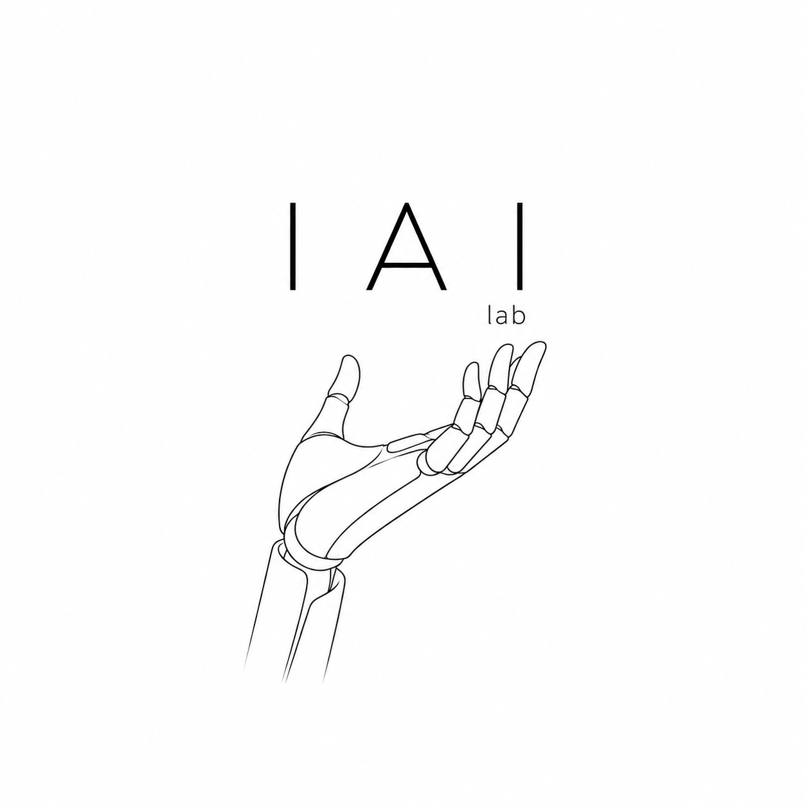

Dexterous Manipulation
Tactile control, grasp planning, and robot-hand mechanics for fragile, deformable, and unfamiliar objects.
Robotics / Embodied Intelligence / Human-Machine Systems
We build robotic hands, perception systems, and autonomous agents that can understand physical intent, act with precision, and collaborate in human environments.

Research Lines
Tactile control, grasp planning, and robot-hand mechanics for fragile, deformable, and unfamiliar objects.
Perception-action models that connect language, spatial reasoning, and continuous control.
Intent-aware control surfaces for operators, clinicians, and field teams working with robotic systems.
Closed-loop experimentation where robots collect data, test hypotheses, and improve their own policies.
Platforms
The lab stack combines custom end-effectors, synchronized vision, force sensing, and reproducible simulation.
Five-finger tendon actuation, tactile arrays, and high-rate joint telemetry.
Multi-camera reconstruction for manipulation, tracking, and skill evaluation.
Policy training, synthetic data generation, and repeatable benchmark scenes.
System Pulse
grip.force12.8 N
policy.conf94%
pose.error0.7 mm
latency8 ms
Publications & News
Join the Work
We collaborate with researchers, companies, and students working on embodied AI, robotic manipulation, perception, and autonomous experimental systems.